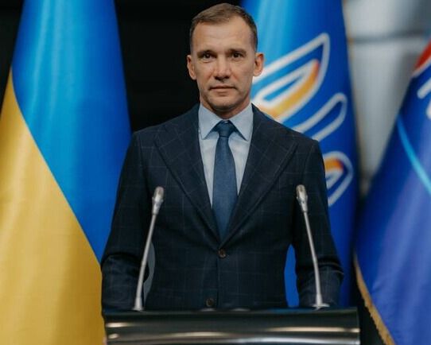
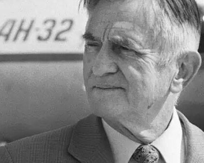

Сила розуму і духу – про українських новаторів і чемпіонів.
Україна подарувала світу багато видатних особистостей, які зробили значний внесок у науку, спорт та
технічний прогрес.
Українці досягли висот у багатьох сферах, встановлюючи рекорди, роблячи наукові відкриття та створюючи
винаходи, що
змінили людство.
У цій статті ми розглянемо найбільш визначних українських спортсменів, вчених та
винахідників, які
прославили нашу країну.
Легенди спорту
-
Віталій Кличко (боксер, політик)
Народився 19 липня 1971 року в місті Білі Церкви, Україна.
Віталій Кличко — один із найсильніших боксерів суперважкої ваги, екс-чемпіон світу за версіями WBC, WBO, WBA та IBF. Окрім спортивних досягнень, він також відомий своєю політичною діяльністю і є мером Києва.Нагороди:
- Чемпіон світу за версією WBC (2004, 2008, 2013)
- Чемпіон світу за версією WBA (2009)
- Чемпіон світу за версією IBF (2012)
- Заслужений майстер спорту України (1996)
- Володимир Кличко (боксер)
Народився 25 березня 1976 року в місті Семипалатинськ, Казахстан (на той час СРСР).
Володимир Кличко — один з найбільших боксерів в історії, колишній чемпіон світу в суперважкій вазі за версіями WBA, WBC, IBF, WBO. Він володів титулом чемпіона світу більше десяти років і здобув багато міжнародних нагород.Нагороди:
- Чемпіон світу за версією WBA (2000, 2006, 2011)
- Чемпіон світу за версією WBC (2009, 2011)
- Чемпіон світу за версією IBF (2006, 2007, 2011)
- Золотий медаліст Олімпійських ігор 1996 року (Атланта)
- Олександр Усик (боксер)
Народився 17 січня 1987 року в місті Сімферополь, Крим, Україна.
Олександр Усик — український боксер, який став абсолютним чемпіоном світу у важкій вазі, вигравши всі пояси. Він також був олімпійським чемпіоном 2012 року. Усик продовжує успішно виступати в суперважкій вазі, набуваючи міжнародного визнання.Нагороди:
- Абсолютний чемпіон світу у важкій вазі (2018)
- Чемпіон світу за версією WBO (2016)
- Чемпіон світу за версією IBF (2016)
- Чемпіон світу за версією WBA (2018)
- Чемпіон Олімпійських ігор 2012 року (Лондон)
- Сергій Бубка (легка атлетика)
Народився 4 грудня 1963 року в місті Луганськ, Україна.
Сергій Бубка — легендарний стрибун з жердиною, який встановив 35 світових рекордів. Він є олімпійським чемпіоном 1988 року і здобув титул чемпіона світу шість разів. Бубка також є постійним символом розвитку легкої атлетики.Нагороди:
- Олімпійський чемпіон 1988 року (Сеул)
- Чемпіон світу (1983, 1987, 1991, 1993, 1995, 1997)
- Чемпіон Європи (1986, 1990, 1994)
- Заслужений майстер спорту СРСР (1982)
- Андрій Шевченко (футболіст)

Народився 29 вересня 1976 року в місті Дніпродзержинськ (тепер Кам’янське), Україна.
Андрій Шевченко — один з найвідоміших футболістів України, володар Золотого м’яча 2004 року. Він виступав за такі клуби, як "Мілан" і "Челсі", та був лідером національної збірної України.Нагороди:
- Золотий м'яч 2004 року
- Чемпіон Ліги чемпіонів (2003, 2004)
- Чемпіон Італії (2004, 2011)
- Чемпіон Англії (2009, 2010)
- Кращий футболіст Європи (2004)
- Леонід Буряк (футболіст)
Народився 8 листопада 1954 року в місті Бердичів, Україна.
Леонід Буряк — український футболіст, півзахисник, який виступав за київське "Динамо". Він був частиною золотих років клубу та здобував численні трофеї на національному та міжнародному рівнях.Нагороди:
- Чемпіон Європи 1975 року
- Чемпіон СРСР (1974, 1975, 1980)
- Володар Кубка Кубків (1975)
- Кращий футболіст України (1979)
- Ольга Харлан (фехтувальниця)
Народилася 30 травня 1990 року в місті Миколаїв, Україна.
Ольга Харлан — одна з найкращих шаблісток у світі, багаторазова чемпіонка світу та Європи, а також олімпійська чемпіонка 2008 року. Вона є однією з найуспішніших фехтувальниць сучасності.Нагороди:
- Олімпійська чемпіонка 2008 року (Пекін)
- Чемпіонка світу (2009, 2013, 2014)
- Чемпіонка Європи (2009, 2010, 2015)
- Заслужений майстер спорту України (2008)
- Еліна Світоліна (тенісистка)
Народилася 12 вересня 1994 року в місті Одеса, Україна.
Еліна Світоліна — одна з найуспішніших тенісисток України, яка протягом кількох років входила в топ-10 світового рейтингу WTA. Вона здобула значну кількість титулів на турнірах Великого шолома та досягла вершин у жіночому тенісі.Нагороди:
- Чемпіонка WTA Finals (2018)
- Чемпіонка турнірів Великого шолома в парному розряді
- Бронзова медаль на Олімпійських іграх 2020 року (Токіо)
- Чемпіонка та фіналістка численних турнірів WTA
- Дмитро Підручний (біатлон)
Народився 13 грудня 1991 року в місті Чернівці, Україна.
Дмитро Підручний — український біатлоніст, який здобув золоту медаль на Чемпіонаті світу 2020 року в індивідуальній гонці. Він є одним з провідних спортсменів України у зимових видах спорту.Нагороди:
- Чемпіон світу 2020 року (індивідуальна гонка)
- Бронзова медаль на Чемпіонаті світу (2017)
- Чемпіон України (2019, 2021)
- Ірина Мерлені (вільна боротьба)
Народилася 12 травня 1982 року в місті Білгород-Дністровський, Україна.
Ірина Мерлені — одна з найуспішніших українських борців, олімпійська чемпіонка 2004 року та багаторазова чемпіонка світу. Вона була однією з лідерок вільної боротьби і залишила значний слід в історії цього виду спорту.Нагороди:
- Олімпійська чемпіонка 2004 року (Афіни)
- Чемпіонка світу (2002, 2003, 2006)
- Чемпіонка Європи (2004, 2005, 2006)
- Заслужений майстер спорту України
Ці спортсмени стали не лише лідерами у своїх дисциплінах, а й моральними авторитетами для українців. Їхня рішучість і підтримка України надихають та мотивують інших, зокрема на міжнародній арені, де їхня позиція щодо війни допомагає зміцнити підтримку України та ізоляцію росії. Їхня активність є важливою для морального духу нації та світового визнання боротьби за гідність і свободу України.
Перейти на початок сторінки Легенди спорту Винахідники, які змінили світ Перейти в кінець сторінкиУкраїнські науковці-новатори
- Олександр Богомолець (1881–1946; Київ, Україна; біолог і патофізіолог)
Олександр Богомолець — видатний біолог і патофізіолог, який зробив значний внесок у вивчення механізмів старіння і довголіття. Він також розробив методи, що допомогли зміцнювати імунітет людини та сприяли загоєнню ран. Його наукові розробки стали основою для сучасної медицини в багатьох галузях.
- Микола Амосов (1913–2002; народився в росії; постійно проживав та похований в
Україні; науковець, кардіохірург)
Микола Амосов був легендарним кардіохірургом і науковцем, який першим створив штучний клапан серця. Він також є засновником біокібернетики, науки, що вивчає взаємодію людського тіла з технічними системами, що стало основою для подальшого розвитку медичних технологій.
- Володимир Вернадський (1863–1945; народився в росії; постійно проживав
та похований
в
Україні; науковець і філософ)
Володимир Вернадський був видатним вченим, основоположником вчення про ноосферу — концепцію, яка розглядає взаємодію людства з навколишнім середовищем. Він був першим президентом Академії наук України та зробив величезний внесок у геохімію, біогеохімію та радіоактивність.
- Сергій Корольов (1907–1966; Житомир, Україна)
Сергій Корольов — головний конструктор радянської космічної програми, який вивів на орбіту перший штучний супутник Землі (1957) та запустив першу людину в космос, Юрія Гагаріна (1961). Він є одним із основоположників сучасної космонавтики, і його робота стала ключовою для розвитку космічних технологій у світі.
- Євген Патон(1870–1953; Ніцца, Франція; постійно проживав та похований
в Україні; вчений у галузі зварювальних процесів і мостобудування)

Євген Патон — видатний інженер, основоположник методу електрозварювання. Його розробки застосовуються в різних сферах, зокрема в мостобудуванні та космічній галузі. Він заснував Інститут електрозварювання в Києві, що став однією з провідних наукових установ у світі.
Українські науковці-новатори, чиї досягнення змінили хід розвитку багатьох галузей науки та техніки, продовжують залишати глибокий слід у світовій науці. Їхні відкриття та інновації мали не лише наукове, а й практичне значення, адже вони сприяли покращенню здоров'я людей, розвитку технологій та розширенню наших уявлень про навколишній світ. Вони визначали наукові напрямки, що стали основою для багатьох сучасних дисциплін, від медицини і біології до космічних технологій та інженерії. Робота цих вчених не лише демонструє надзвичайну відданість науці, але й показує, як інтелектуальні зусилля можуть сприяти прогресу на глобальному рівні. Внесок кожного з них не тільки змінив їхню країну, а й допоміг людству подолати нові рубежі в науці і техніці.
Перейти на початок сторінки Легенди спорту Українські науковці-новатори Перейти в кінець сторінкиВинахідники, які змінили світ
- Ігор Сікорський(1889–1972; Київ, Україна; з 1919 місце постійного проживання: США)
Ігор Сікорський був авіаконструктором, пілотом і новатором, який зробив величезний внесок у розвиток авіації, зокрема, вертольотобудування. Він створив перший у світі серійний вертоліт Sikorsky R-4, який став основою для розвитку сучасних вертольотів. До того ж, він розробив перші трансатлантичні пасажирські літаки, що забезпечили швидке і безпечне сполучення між континентами. Сікорський працював у США, де заснував власну авіаційну компанію. Його роботи мали важливий вплив на розвиток військової і цивільної авіації, а його ім'я стало синонімом надійності і інновацій.
- Олег Антонов(1906–1984; Київ, Україна; авіаконструктор)

Олег Антонов був одним із найвідоміших авіаконструкторів 20-го століття, засновником і керівником конструкторського бюро "Антонов", яке стало відомим завдяки створенню надважких транспортних літаків. Під його керівництвом було створено низку літаків, що стали еталоном у своїх класах. Найбільше відомий завдяки таким літакам, як Ан-2 (легкий багатоцільовий літак), Ан-22 "Антей" (найбільший вантажний літак на момент його створення) та Ан-225 "Мрія" (найбільший у світі літак, призначений для транспортування важких вантажів).
Антонов також розробляв літаки для різних військових цілей, а його роботи значно сприяли розвитку авіаційної галузі СРСР. Під його керівництвом було створено понад 20 моделей літаків, багато з яких увійшли до історії як важливі досягнення в авіаційній індустрії. - Борис Патон (1918–2020; Київ, Україна)
Борис Патон був видатним українським науковцем, який вніс вагомий внесок у розвиток зварювальної технології, а також в космічні та медичні технології. Він продовжив справу свого батька, засновника Інституту електрозварювання, Євгена Патона, і розробив методи, що дозволяють зварювати матеріали в умовах вакууму, а також у космосі. Крім того, його методи біозварювання успішно використовуються у медицині для зрощування кісток і лікування важких травм. Завдяки його дослідженням значно покращилася безпека і ефективність зварювальних робіт на великих висотах і в космосі.
- Володимир Хавкін(1860–1930; Бердянськ, Україна; місце постійного проживання:
Франція)
Володимир Хавкін був відомим вченим-мікробіологом, одним із піонерів у створенні вакцин. Він розробив перші вакцини проти холери та чуми, що дозволило знизити смертність від цих хвороб і врятувати мільйони людських життів по всьому світу. Хавкін працював у Франції та Індії, де його вакцини застосовувалися в боротьбі з епідеміями. Його відкриття стало важливим внеском у сучасну імунологію та боротьбу з інфекційними хворобами.
Нагороди:
- Орден Почесного легіону (Франція)
- Медаль імені Луї Пастера (за досягнення в біології)
- Відзнаки за заслуги в розвитку медицини і охорони здоров'я
- Почесний член кількох наукових товариств по всьому світу
Винахідники з України зробили вагомий внесок у розвиток світових наукових і технічних досягнень. Їхня праця відзначалася не лише інноваціями, а й глибоким прагненням змінити навколишній світ на краще. Розроблені ними технології та відкриття мали великий вплив на різноманітні галузі, від медицини і біотехнологій до авіації та електроніки. Завдяки їхнім зусиллям, багато із створених ними рішень стали основою для подальшого прогресу і нових досягнень. Вони довели, що наукові інновації можуть змінювати не лише конкретні сфери, а й цілу епоху, залишаючи незабутній слід у глобальному розвитку.